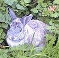

Un Dgèrnésiais acatit dgiex lapîns, mais malheutheusement i' n'avait qué neu cages. I' voulait les s'pather, iun dans châque cage, mais comment s'y prendre! Auprès aver gratté sa tête pour eune pose, il arrivit à résoudre san problème. Comment tch'i' s'y prînt?
Eh bein, preunmiéthement, pour lé temps, il en mînt deux dans la pus grand' cage, et pis i' mînt l'traîsième dans la deuxième, l'quatrième dans la traisième, l'chînquième dans la quatrième, l'siêxième dans la chînquième, l'septième dans la siêxième, l'huitième dans la septième et l'neuvième dans la huitième. Et pis il en r'halit iun des deux dé d'dans la grand' cage et l'mînt dans la neuvième. Et v'là tchi faisait dgix!
I' n'ya qu'un Dgérnèsiais tchi pouôrrait faithe d'ité!
Viyiz étout: